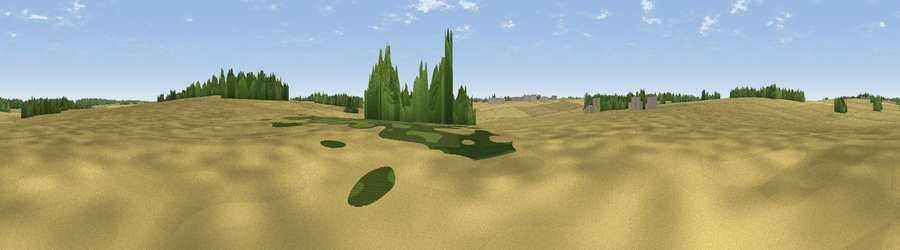

Chrishall Common
#46205 in England · top 99% of its area beats it · near Langley Upper GreenWhere it is
The exact computed spot (TL 43353 36288). Click the marker for map links.
The view, rendered

A 360° render of this exact spot computed from the terrain model, tree cover and land cover — summer colours, afternoon light, calibrated against photographs of famous viewpoints. Real trees, hedges and buildings will differ in detail.
The panorama
Grey silhouette: terrain skyline in each direction (720 bearings, Earth curvature and refraction included). Dashed green: skyline with trees (+15 m) and buildings (+8 m) as obstacles. Blue strip: how far the ground is visible on each bearing.
Where the view opens
Wedge length = distance to the farthest visible ground on that bearing (vegetation-aware). Rings at 10, 25 and 50 km.
What fills the view
89% cropland · 6% woodland · 4% grassland
Angular shares of the visible panorama (visual magnitude), not map area. Landscape diversity 0.18 (0–1 Shannon).
Key numbers
More beautiful places nearby
The staircase of upgrades: each row has a higher view potential than everything closer. Driving times are estimates from straight-line distance, calibrated against real road routing — check an actual route before setting out.
| Place | Direction | Drive | Score |
|---|---|---|---|
| Cambridgeshire County Top | NNW · 3 km | ~7 min | 33.1 |
| Viewpoint near Heydon | N · 4 km | ~9 min | 50.0 |
| Viewpoint near Royston | WNW · 10 km | ~19 min | 56.6 |
| Viewpoint near Hexton | W · 31 km | ~49 min | 65.4 |
| Viewpoint near Church End | WSW · 45 km | ~66 min | 65.8 |
| Beacon Hill | WSW · 51 km | ~72 min | 74.1 |
| Viewpoint near Halton | WSW · 60 km | ~83 min | 74.3 |
| Coombe Hill Monument | WSW · 65 km | ~88 min | 75.5 |
52.00652, 0.08709 · source: osm peak · position refined by local search. Computed location — check access rights before visiting.